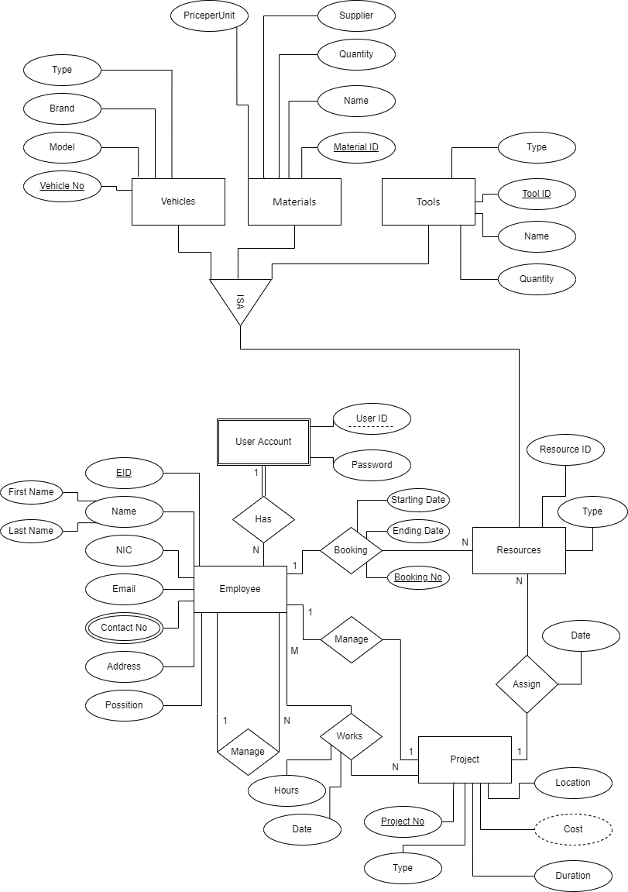
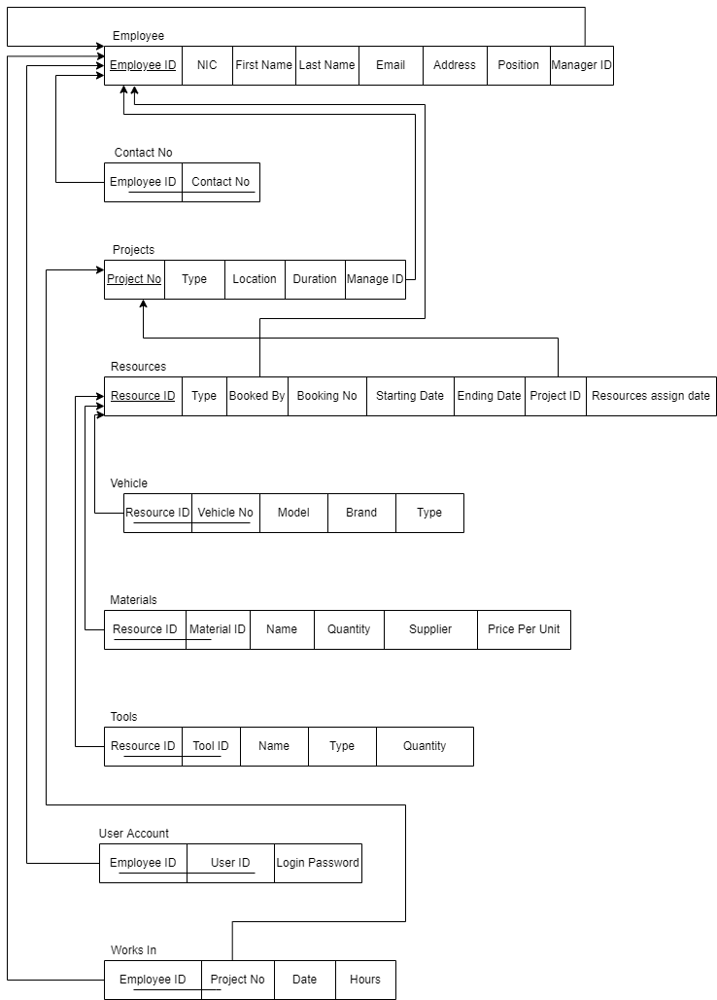

Information Systems and Data Modeling
: SQL
Resource Booking System
As part of my group assignment for the Information Systems and Data Modeling module in my second semester,
we worked on developing a resource booking system. The project involved several stages, including creating an
Entity-Relationship (ER) diagram, converting it into a relational schema, and then implementing the database
using SQL.
We began by designing the ER diagram, which served as a visual representation of the system's entities, their
attributes, and the relationships between them. The entities in our resource booking system included resources (
such as vehicles, equipment, or facilities), users, bookings, and reservations. We identified the relevant attributes
for each entity, such as resource ID, user ID, booking date, and duration.

Once the ER diagram was finalized, we proceeded to convert it into a relational schema. This involved mapping the
entities, attributes, and relationships from the ER diagram into tables, columns, and foreign keys in a relational
database structure.

With the relational schema in place, we moved on to implementing the database using SQL (Structured Query Language).
We used SQL statements to create the tables based on the relational schema, define the data types and constraints for
each column, and establish the relationships through foreign key constraints.
Project Replit link